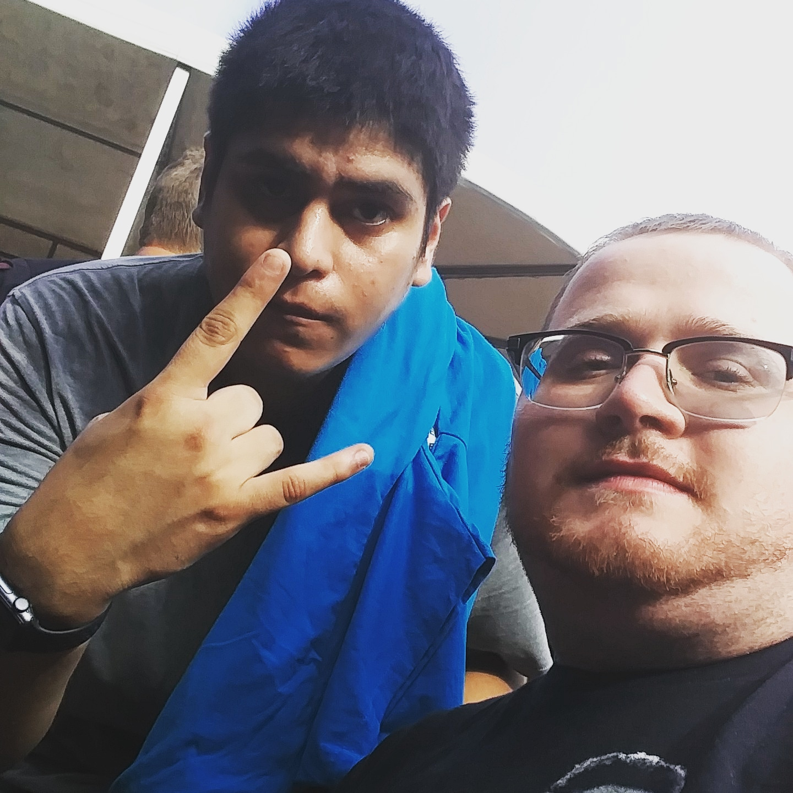
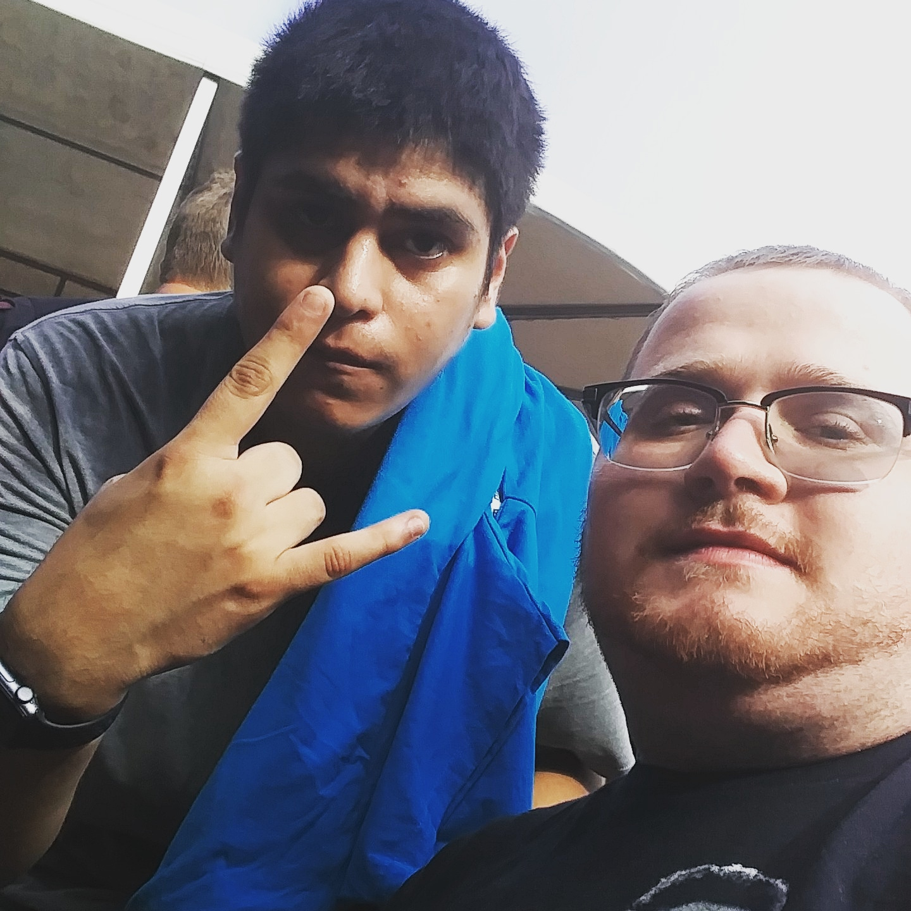
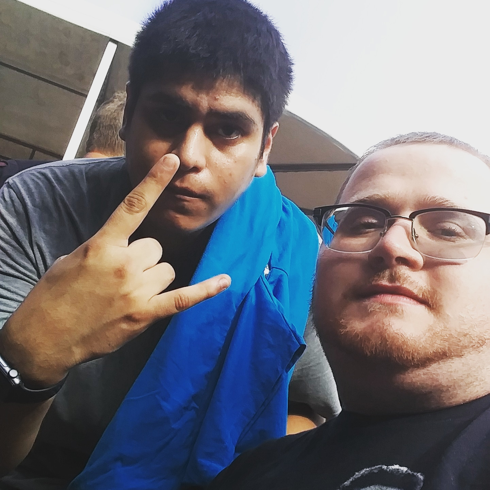
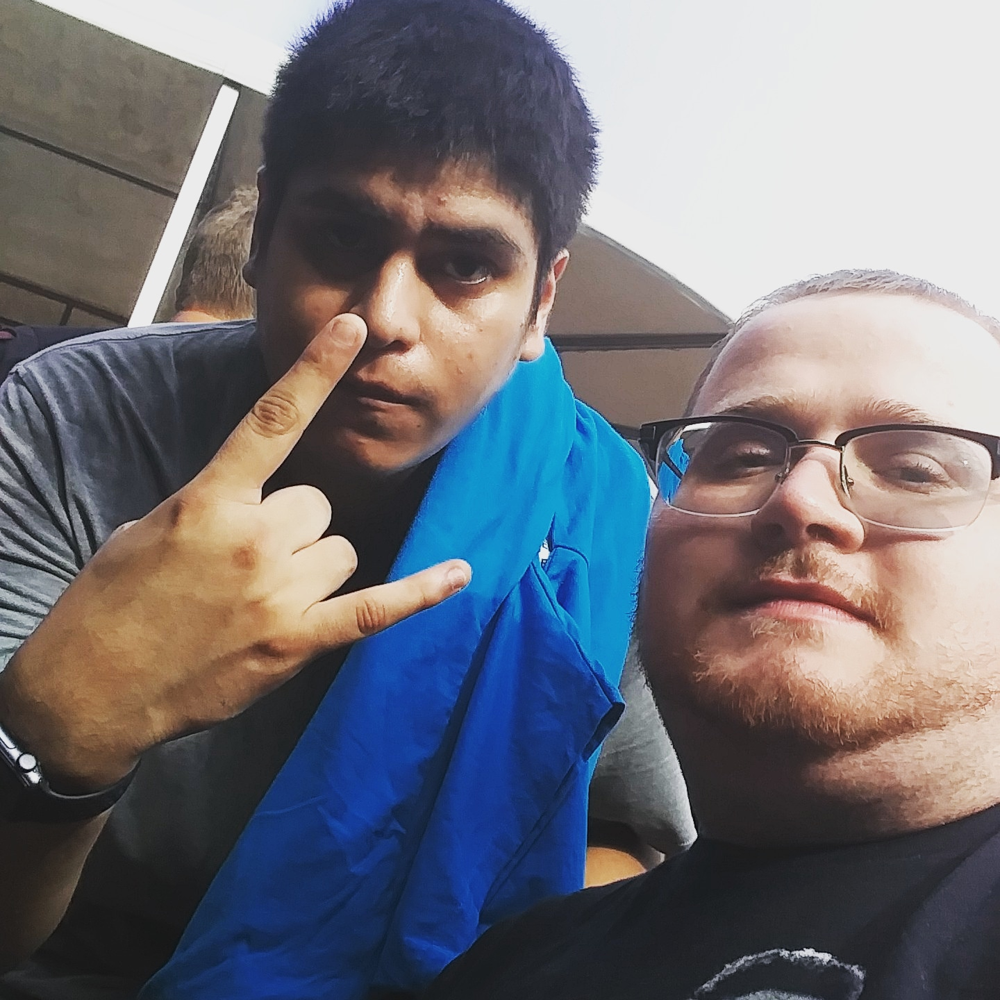

Hello, welcome to my website. My name is Curtis Crouse. I am a web development major who loves technology. I also love music and play the electric guitar! I offer services for Web design with HTML and CSS, client-side scripting, server-side scripting, database administration, and computer networking. I obtained these skills while attending Broward College for a BAS in Information Technology. Learning from instruction and doing projects for classes has helped me learn the necessary skills to become a web developer. I have been providing these services for about a two years now.